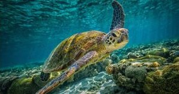
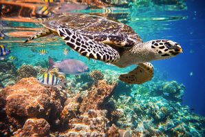
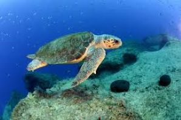
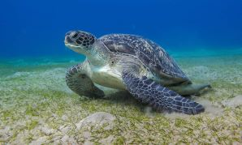
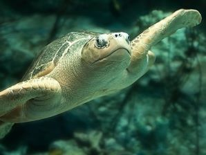

Sri Lanka is home to several species of sea turtles that inhabit its coastal waters and nesting beaches.
Sri Lanka is one of those countries in the world that could claim of having the 3 major types of chelonians, freshwater terrapins,
land tortoises and marine turtles. These magnificent creatures are an important part of the island's marine ecosystem and are
protected by conservation efforts. It's important to note that all sea turtle species are protected by law in
Sri Lanka, and efforts are made to conserve their nesting sites and habitats.
Among the five turtle species found in the Sri Lankan Ocean, three are endangered, one is vulnerable and one is critically endangered.
They visit the Sri Lankan shores to nest
In Sri Lanka, there are seven types of turtle, and five of these are found off the coast of Sri Lanka,
The green sea turtle is the most common species found in Sri Lanka. It is named for the green color of its body fat and green fat tissues that were found underneath their upper shell. . Green sea turtles are known to nest along the coasts of Sri Lanka, and they are also found in the surrounding waters.Green turtles have a maximum length of 1 meter and a maximum weight of 250 kilograms. Around 120 to 140 eggs can be laid off at a time by adult female green turtles and they got the Life span of 80+ years.
These marine turtles are small and medium in size and have a beautiful and colorful pointed, curved beak that resembles a hawk not only that but also they have colorful shells with overlapping scutes. They used to catch animals hiding in small crevices. It is a regular visitor to Sri Lanka and other tropical and subtropical waters.They can be readily distinguished from their relative’s thanks to their shells' vivid, erratic patterns. Many hawksbills move. Their weights range widely from 50 to 70 kg.
The Loggerhead Turtle is rare in Sri Lanka and more frequent in the East Coast of the United States and they are primarily found in the ocean, but we can also occasionally locate them in bays, lagoons, and salt marshes. These turtles usually have a larger head and a reddish-brown shell not only that but also they have Massive heads and strong jaws. Loggerhead turtles are carnivores and feed on mollusks and crustaceans. For nesting, female Loggerhead turtles migrate to the coast. It takes about 49 days for their eggs to hatch. They are known to nest in some areas along the Sri Lankan coast. It has the capacity to grow up to 1 meter in length and weighs between 170 and 200 kg.
The largest severely endangered turtle species worldwide is the leatherback turtle one of the largest living reptiles in the world. They are considered to be one of the most uncommon discoveries in and near Sri Lankan soils. In contrast to what their name suggests, leatherbacks have skin that resembles leather and seven ridges on their 2.5 m long, elongated bodies. Almost extinct and rarely seen. They are the most widely traveled of any turtle, and dive as deep as 4,200 meters.
The tiniest type of sea turtle is the olive ridley. They have an olive green, heart-shaped shell, or carapace. Between September and November, olive ridley turtles lay their eggs on a variety of beaches in Sri Lanka, including Kosgoda, Yala, and other sporadic locations. Females come in groups to lay about 100 eggs up to 3 times a year.
| Name Of The Turtle | Scientific Name | Where It Is Found | Images |
|---|---|---|---|
| Green Turtle | Chelonia mydas | Kosgoda (north of Galle) and Rekawa (near Tangalle) |  |
| Hawksbill Turtle | Eretmochelys imbricata | Pigeon Island National Park(East Coast) |  |
| Loggerhead Turtle | Caretta caretta | the islands southern beaches |  |
| Leatherback Turtle | Dermochelys coriacea | Mount Lavinia, down the west coast, across the south coast, and up to Arugam Bay on the East coast. |  |
| Olive Rideley Turtle | Lepidochelys olivacea | Trincomalee Beach |  |